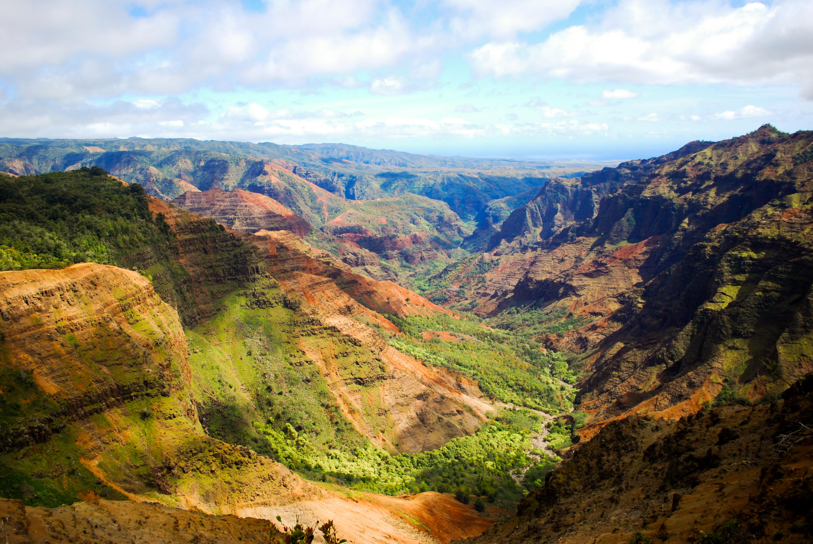

one of the most impressive views in the Hawaiian Islands, the Na Pali Coast is mindblowing. With rippling, multicolored cliffs framed by the rich blue ocean, it is one of those spots that will have you in awe of Mother Nature.
Poipu Beach
Poipu Beach is a popular beach in Kauai. It is a popular spot for surfing, snorkeling, and swimming. It has even been named one of the best beaches in America. If you are looking for a relaxing beach day on Kauai, especially if you have a family, Poipu Beach is a beautiful and serene place to go.
Waimea Canyon

Waimea Canyon is a beautiful canyon that is home to numerous plants and animals. Another incredibly scenic place in Kauai is Waimea Canyon. Sometimes referred to as the Grand Canyon of the Pacific, Waimea Canyon is full of hills, valleys, waterfalls, flora, fauna, and lots of natural colors. It’s a must-see if you’re visiting Kauai. You're able to hike, mountain bike, or drive through the mountains of the canyon.